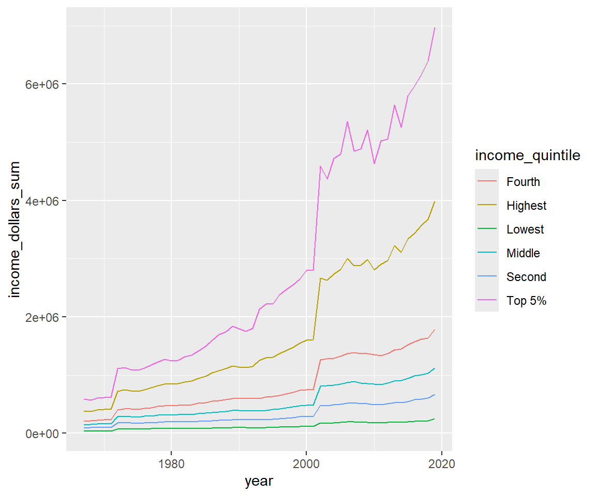

Computer Modeling (OCN 682)
Working with Factors
UH Fall 2026
2026-10-13
Outline
Working with Factors
- What is a factor?
- Factor booby-traps
- Using {forcats} — the tidyverse package for categorical data
- Homework using factors
Set Up Your Script
Load Data
We will use two datasets today:
- income_mean — from a past TidyTuesday (income distribution in the US)
- starwars — built into {dplyr}, loaded automatically with the tidyverse
What Is a Factor?
What Is a Factor?
A factor is a specialized version of a character — it is how R truly stores categorical data.
- The values a factor can take are called levels
- Levels let you control the order of categories in plots and summaries
- The default order of levels is always alphabetical
- Under the hood, R stores factors as integers (1, 2, 3…) mapped to level labels
[1] Apple Grape Banana
Levels: Apple Banana GrapeNote
Notice the levels are printed in alphabetical order (Apple, Banana, Grape) — not the order you entered them. This matters a lot when plotting.
Factor Booby-Traps!
Imagine a column of numbers that has a single typo — R reads the whole thing as characters. If you then convert to numeric, real text becomes NA:
Now try converting after converting to a factor first — this is even worse:
[1] 3 1 2Warning
Yikes! When you call as.numeric() on a factor, R returns the level index (1, 2, 3…), not the original character values. This is a very common silent error.
Reading In Data Safely
Factor booby-traps are why there was a push to stop importing strings as factors automatically.
| Function | How strings are read |
|---|---|
| read.csv() — base R | Strings become factors automatically |
| read_csv() — tidyverse | Strings stay as characters |
Tip
Always use read_csv() from {readr}. You then convert to factors intentionally and explicitly, only when you need a specific ordering — not by accident on import.
The {forcats} Package
For categorical data — also an anagram of “factors”
All main functions start with fct_
Meet the starwars Data
Rows: 87
Columns: 14
$ name <chr> "Luke Skywalker", "C-3PO", "R2-D2", "Darth Vader", "Leia Or…
$ height <int> 172, 167, 96, 202, 150, 178, 165, 97, 183, 182, 188, 180, 2…
$ mass <dbl> 77.0, 75.0, 32.0, 136.0, 49.0, 120.0, 75.0, 32.0, 84.0, 77.…
$ hair_color <chr> "blond", NA, NA, "none", "brown", "brown, grey", "brown", N…
$ skin_color <chr> "fair", "gold", "white, blue", "white", "light", "light", "…
$ eye_color <chr> "blue", "yellow", "red", "yellow", "brown", "blue", "blue",…
$ birth_year <dbl> 19.0, 112.0, 33.0, 41.9, 19.0, 52.0, 47.0, NA, 24.0, 57.0, …
$ sex <chr> "male", "none", "none", "male", "female", "male", "female",…
$ gender <chr> "masculine", "masculine", "masculine", "masculine", "femini…
$ homeworld <chr> "Tatooine", "Tatooine", "Naboo", "Tatooine", "Alderaan", "T…
$ species <chr> "Human", "Droid", "Droid", "Human", "Human", "Human", "Huma…
$ films <list> <"A New Hope", "The Empire Strikes Back", "Return of the J…
$ vehicles <list> <"Snowspeeder", "Imperial Speeder Bike">, <>, <>, <>, "Imp…
$ starships <list> <"X-wing", "Imperial shuttle">, <>, <>, "TIE Advanced x1",…How Many of Each Species?
# A tibble: 37 × 2
species n
<chr> <int>
1 Human 35
2 Droid 6
3 Gungan 3
4 Kaminoan 2
5 Mirialan 2
6 Twi'lek 2
7 Wookiee 2
8 Zabrak 2
9 Aleena 1
10 Besalisk 1
# ℹ 27 more rowsThere are 38 unique species, but most appear only once. Let’s lump the rare ones together.
fct_lump() — Lump Rare Levels Together
fct_lump(x, n) keeps the n most common levels and collapses everything else into "Other":
# A tibble: 4 × 2
species n
<fct> <int>
1 Droid 6
2 Gungan 3
3 Human 35
4 Other 39Note
The result is now a factor — notice the output is no longer alphabetical. The order is determined by the factor levels, not the label names.
Reordering Factors
The default alphabetical order is almost never what you want in a plot.
A Basic Bar Plot
This is hard to read. It would be more useful sorted by count.
fct_reorder() — Sort by Another Variable
fct_reorder(f, x) reorders the levels of factor f by the values of x:
fct_reorder() — Descending Order
Add .desc = TRUE to flip the order:
Reordering Line Plot Legends
The income_mean Data
Rows: 3,708
Columns: 5
$ year <dbl> 2019, 2019, 2019, 2019, 2019, 2019, 2018, 2018, 2018, …
$ race <chr> "All Races", "All Races", "All Races", "All Races", "A…
$ dollar_type <chr> "Current Dollars", "Current Dollars", "Current Dollars…
$ income_quintile <chr> "Lowest", "Second", "Middle", "Fourth", "Highest", "To…
$ income_dollars <dbl> 15286, 40652, 68938, 111112, 254449, 451122, 13775, 37…Summarize by Year and Quintile
Tip
mutate(income_quintile = factor(income_quintile)) converts the character column to a factor so we can reorder it. If you skip this step, {forcats} reordering functions won’t work.
Basic Line Plot — Legend in Wrong Order

The legend order doesn’t match the line order — the highest income group is at the bottom of the legend.
fct_reorder2() — Reorder by Two Variables
fct_reorder2(f, x, y) reorders f by the values of y at the largest values of x. This aligns the legend with the right end of the lines:
Setting Levels Manually
Sometimes you need a specific order that isn’t determined by the data.
factor() with levels = …
Use the levels argument inside factor() to set the exact order you want:
[1] Jan Mar Apr Dec
Levels: Apr Dec Jan Mar[1] Jan Mar Apr Dec
Levels: Jan Mar Apr DecTip
This is especially useful for months, tide heights, treatment levels — any categorical variable with a meaningful inherent order that isn’t alphabetical.
Subsetting Factors
What happens to factor levels when you filter your data?
Filter to Common Species
Let’s filter the starwars data to only species with more than 3 individuals:
# A tibble: 2 × 2
species n
<fct> <int>
1 Human 35
2 Droid 6 [1] "Aleena" "Besalisk" "Cerean" "Chagrian"
[5] "Clawdite" "Droid" "Dug" "Ewok"
[9] "Geonosian" "Gungan" "Human" "Hutt"
[13] "Iktotchi" "Kaleesh" "Kaminoan" "Kel Dor"
[17] "Mirialan" "Mon Calamari" "Muun" "Nautolan"
[21] "Neimodian" "Pau'an" "Quermian" "Rodian"
[25] "Skakoan" "Sullustan" "Tholothian" "Togruta"
[29] "Toong" "Toydarian" "Trandoshan" "Twi'lek"
[33] "Vulptereen" "Wookiee" "Xexto" "Yoda's species"
[37] "Zabrak" Warning
The filtered data frame only has 3 species, but the factor still has all 38 levels. This causes extra blank bars, axis labels, and legend entries in plots.
droplevels() — Remove Unused Levels
droplevels() (base R) or fct_drop() (forcats) removes any levels that no longer appear in the data:
Now the factor only has 2 levels
fct_recode() — Rename Levels
fct_recode(f, “new name” = “old name”) renames one or more levels:
Other Helpful {forcats} Functions
| Function | What it does |
|---|---|
| fct_relevel() | Move specific levels to the front |
| fct_rev() | Reverse the order of levels |
| fct_collapse() | Collapse multiple levels into one |
| fct_na_value_to_level() | Convert NA into an explicit level |
| fct_infreq() | Order levels by frequency |
Further reading: - R for Data Science — Factors - Jenny Bryan — Stat 545 Factors
Today’s Totally Awesome R Package — {gm}
{gm} generates music notation and audio directly from R!
Note
Run this interactively in RStudio — gm::show() opens the score and plays back the audio. It won’t render inside a presentation but is very fun for exploring in the console.
Homework
Working with intertidal data. Your goal is to make a plot where at least one axis is a factor in a meaningful order.
- Data files in the
data/folder:intertidal.csvandintertidal_latitude.csv(plus a data dictionary) - You may need to use string-cleaning skills (check out the {janitor} package) to tidy column names
- If you visualize by tide height, it must go Low → Mid → High on the plot
- If you visualize by site, it must go in order of latitude (N→S or S→N)
Warning
Homework is due Tuesday.
Thanks!
Slides created with Quarto and RevealJS.
Many slides adapted from:
forcats.tidyverse.org | R for Data Science | Jenny Bryan — Stat 545
OCN 682 | Week 9 | Working with Factors